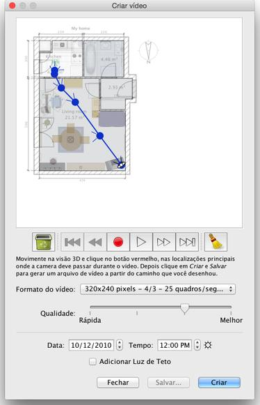

| Criando videos | |||
Para criar um vídeo 3D de sua casa, selecione a visualização em 3D > Criar vídeo... ou clique na ferramenta Criar vídeo.
Isto irá mostrar uma caixa de diálogo semelhante ao dedicado à criação de fotos. 
No topo deste painel, aparece o plano de sua casa sobre a qual o caminho
virtual da câmera de vídeo será desenhado. Abaixo do plano, os botões de gravação,
reprodução ajudará você a registrar os pontos do caminho que a camera deverá passar
ou retirar alguns pontos do caminho.
Para criar um vídeo, escolha a localização inicial da câmera de vídeo na
visualização em 3D na janela principal do Sweet Home 3D e clique no botão
vermelho no painel de criação de vídeo. Em seguida, mover a visualização em
3D para o próximo local da câmera de vídeo e clique novamente no botão
vermelho. Repita essas etapas para cada local que a câmera deve passar durante o
vídeo. |
|